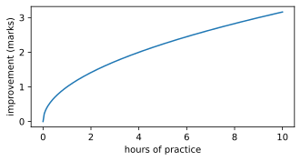
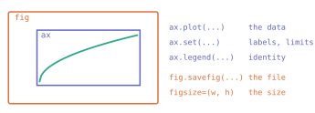
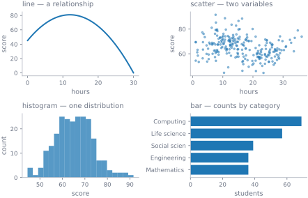
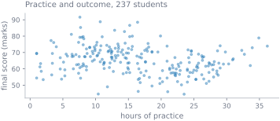
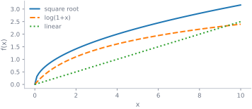
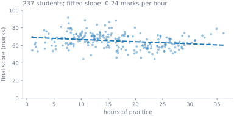

import numpy as np
import matplotlib.pyplot as plt
x = np.linspace(0, 10, 200)
fig, ax = plt.subplots(figsize=(5.2, 2.4))
ax.plot(x, np.sqrt(x))
ax.set(xlabel="hours of practice", ylabel="improvement (marks)")
plt.show()
Python · Unit 10
Why this unit is here
A plot is an argument. It says look at this, and conclude that — and it can make a real pattern obvious or an absent one look convincing.
So this unit is about two things at once: the mechanics of getting a figure out of Matplotlib, and the small number of choices that decide whether the figure tells the truth. Shared scales, honest axes, and not relying on colour alone are not polish. They are the difference between a chart and a claim you can defend.
You should be able to:
Quick check. What does np.linspace(0, 1, 5) give, and why is it the right tool for plotting a curve?
[0, 0.25, 0.5, 0.75, 1] — exactly five points, including both ends. That last part is why: arange stops before its endpoint, so a curve drawn with it would fall short of the right edge.
Matplotlib has two interfaces. Use the one where every command names its target:
import numpy as np
import matplotlib.pyplot as plt
x = np.linspace(0, 10, 200)
fig, ax = plt.subplots(figsize=(5.2, 2.4))
ax.plot(x, np.sqrt(x))
ax.set(xlabel="hours of practice", ylabel="improvement (marks)")
plt.show()
plt.subplots() hands back two objects, and knowing which is which removes most confusion:

Data goes to ax. Sizing and saving go to fig. Once that split is clear the rest of the library follows.
import pandas as pd
cohort = pd.read_csv("../data/cohort.csv")
cohort["final_score"] = pd.to_numeric(cohort["final_score"], errors="raise")
data = cohort[cohort["final_score"].between(0, 100) & cohort["background"].notna()]
fig, axes = plt.subplots(2, 2, figsize=(6.4, 4.2))
axes[0, 0].plot(np.linspace(0, 30, 100), 45 + 6*np.linspace(0, 30, 100)
- 0.25*np.linspace(0, 30, 100)**2)
axes[0, 0].set(title="line — a relationship", xlabel="hours", ylabel="score")
axes[0, 1].scatter(data["hours_practice"], data["final_score"], s=7, alpha=0.45)
axes[0, 1].set(title="scatter — two variables", xlabel="hours", ylabel="score")
axes[1, 0].hist(data["final_score"], bins=20, alpha=0.75)
axes[1, 0].set(title="histogram — one distribution", xlabel="score", ylabel="count")
counts = data["background"].value_counts().sort_values()
axes[1, 1].barh(counts.index.str[:12], counts.values)
axes[1, 1].set(title="bar — counts by category", xlabel="students")
fig.tight_layout()
plt.show()
fig.tight_layout() stops labels from overlapping their neighbours. Call it before saving, every time.
fig, ax = plt.subplots(figsize=(5.2, 2.4))
ax.scatter(data["hours_practice"], data["final_score"], s=8, alpha=0.4)
ax.set(xlabel="hours of practice", ylabel="final score (marks)",
title="Practice and outcome, 237 students")
fig.tight_layout()
plt.show()
Say what the variable is and what unit it is in. “score” is a label; “final score (marks)” is information. A reader who cannot tell whether your y-axis is marks, percentages or z-scores cannot check your conclusion.
Roughly one man in twelve has some form of colour-vision deficiency, and plenty of figures get printed in greyscale anyway. Give every series a second cue — line style, marker shape, or a direct label:
x = np.linspace(0, 10, 100)
fig, ax = plt.subplots(figsize=(5.2, 2.4))
ax.plot(x, np.sqrt(x), linestyle="-", label="square root")
ax.plot(x, np.log1p(x), linestyle="--", label="log(1+x)")
ax.plot(x, x/4, linestyle=":", label="linear")
ax.set(xlabel="x", ylabel="f(x)")
ax.legend()
fig.tight_layout()
plt.show()
from pathlib import Path
OUT = Path("_outputs"); OUT.mkdir(exist_ok=True)
fig, ax = plt.subplots(figsize=(5.2, 2.4))
ax.hist(data["final_score"], bins=20, alpha=0.8)
ax.set(xlabel="final score (marks)", ylabel="students")
fig.tight_layout()
fig.savefig(OUT / "scores.svg")
plt.close(fig)
print("wrote", (OUT / "scores.svg").stat().st_size, "bytes")wrote 24380 bytesUse SVG or PDF for plots — they are lines and text, and stay sharp at any size. PNG or JPEG are for photographs. And plt.close(fig) after saving: a script that makes fifty figures without closing them will eat memory and warn you about it.
One figure, made defensible.
The cohort’s overall relationship between practice and score is the dataset’s headline oddity. Here it is, plotted carefully:
fig, ax = plt.subplots(figsize=(5.6, 2.9))
ax.scatter(data["hours_practice"], data["final_score"],
s=14, alpha=0.45, edgecolor="none")
fit = np.polyfit(data["hours_practice"], data["final_score"], 1)
line_x = np.array([data["hours_practice"].min(), data["hours_practice"].max()])
ax.plot(line_x, np.polyval(fit, line_x), linestyle="--", lw=2)
ax.set(xlabel="hours of practice", ylabel="final score (marks)",
title=f"237 students; fitted slope {fit[0]:+.2f} marks per hour")
ax.set_ylim(0, 100)
fig.tight_layout()
plt.show()
Three decisions in that figure are worth naming.
The y-axis starts at zero and ends at 100, because the score is bounded there. Letting Matplotlib pick would have zoomed into the occupied range and made a modest slope look dramatic. Truncating an axis is the commonest way an honest number becomes a misleading picture.
The slope is in the title, with units. A reader can check the line against the number rather than eyeballing it.
Transparency is set to 0.45, because 237 points overlap. Without it, a dense region reads as one blob and you cannot see where the mass is.
And the thing the figure does not say: that practising less causes higher scores. The slope is negative, and it is real — but S12 shows the relationship reverses inside every background group. A plot can be drawn correctly and still invite the wrong conclusion, which is why the caption matters as much as the code.
Exercise 1 Why is plt.subplots() preferable to calling plt.plot() directly?
plt.plot() draws on whatever figure Matplotlib currently considers active, which is invisible state. In a notebook run out of order, or a script with several figures, “current” is not always what you think.
fig, ax = plt.subplots() names both objects, so every subsequent command says what it is acting on. The moment you have two panels it is the only workable option.
Exercise 2 Two histograms are drawn side by side, each with bins=10 and no shared axes. Give two distinct reasons they cannot be compared.
bins=10 means “ten bins spanning this data”, so the two panels divide different ranges into different intervals. A bar in one is not the same width as a bar in the other.Fix both: pass an explicit bins= array shared by both, and sharex=True, sharey=True. Then state each group’s n, because a taller bar may only mean a bigger group.
Exercise 3 A colleague’s bar chart of mean scores has a y-axis running from 58 to 62, and the difference between groups looks enormous. Is the chart wrong? What would you change?
Nothing plotted is false — the bars are at the right heights for that axis. But the impression is wrong: a four-mark spread fills the whole panel and reads as a dramatic difference.
For bars, the length is the encoding, so the axis should start at zero; otherwise length no longer means magnitude. If the differences are genuinely small and genuinely interesting, plot the difference directly, with an interval showing how precisely it is known — which is S8’s subject.
The general rule: truncate an axis only when zero is meaningless for the quantity, and say so.
Plots are easy to get subtly wrong, and three checks catch most of it.
Check the axis limits are what you intended:
fig, ax = plt.subplots(figsize=(4.6, 1.9))
ax.hist(data["final_score"], bins=20)
ax.set_ylim(0)
print("x limits:", tuple(round(v, 1) for v in ax.get_xlim()))
print("y limits:", tuple(round(v, 1) for v in ax.get_ylim()))
assert ax.get_ylim()[0] == 0, "count axis must start at zero"
plt.close(fig)
print("count axis starts at zero")x limits: (42.1, 94.0)
y limits: (0.0, 26.2)
count axis starts at zeroCheck nothing was silently dropped. A histogram outside its range simply does not draw the points:
scores = data["final_score"]
bins = np.linspace(40, 90, 26) # a range chosen by eye
inside = scores.between(bins[0], bins[-1]).sum()
print(f"{inside} of {len(scores)} points fall inside the plotted range")
assert inside == len(scores), f"{len(scores) - inside} points would be invisible"236 of 237 points fall inside the plotted range--------------------------------------------------------------------------- AssertionError Traceback (most recent call last) Cell In[11], line 5 3 inside = scores.between(bins[0], bins[-1]).sum() 4 print(f"{inside} of {len(scores)} points fall inside the plotted range") ----> 5 assert inside == len(scores), f"{len(scores) - inside} points would be invisible" AssertionError: 1 points would be invisible
That assertion is not decoration — it just caught a real mistake. A range of 40 to 90 looked reasonable and quietly excluded a student. Derive the range from the data instead of choosing it by eye:
bins = np.linspace(scores.min(), scores.max(), 26)
inside = scores.between(bins[0], bins[-1]).sum()
print(f"{inside} of {len(scores)}; range {bins[0]:.1f} to {bins[-1]:.1f}")
assert inside == len(scores)
print("every point is inside the plotted range")237 of 237; range 44.5 to 91.6
every point is inside the plotted rangeCheck it survives greyscale. If two series differ only in hue, converting to luminance makes them indistinguishable:
fig, ax = plt.subplots(figsize=(4.6, 1.9))
styles = ["-", "--", ":"]
for k, style in enumerate(styles):
ax.plot(np.linspace(0, 5, 50), np.linspace(0, 5, 50)**(k+1)/5**k,
linestyle=style, label=f"series {k+1}")
ax.legend()
handles, _ = ax.get_legend_handles_labels()
print("distinct line styles:", len({h.get_linestyle() for h in handles}),
"of", len(handles), "series")
assert len({h.get_linestyle() for h in handles}) == len(handles)
plt.close(fig)
print("every series has its own line style")distinct line styles: 3 of 3 series
every series has its own line styleWhere this usually goes wrong
bins array and sharex / sharey, and state each group’s n.
plt.plot() in anything with more than one figureplt.close(fig) in a scriptalpha restores the density.
Answers are at the foot of the page.
fig, ax = plt.subplots() — which object do you call savefig on?
ax b. fig c. either d. pltbins=10 each. Name the problem in one sentence.(b) fig. The figure is the page being written out; the axes are drawn on it.
Because a bar encodes its value as length from the baseline, so moving the baseline breaks the encoding. A scatter encodes value as position, and a reader reads the position off the axis — so a zoomed range is legitimate, provided the axis is labelled.
bins=10 means ten bins across each panel’s own range, so the two panels use different bin widths and are not comparable.
For genuinely raster content — a photograph, a satellite image, a rendered heatmap of a very large grid. Line-and-text plots should be SVG or PDF.
alpha — transparency, so overlapping points accumulate visibly and you can see where the density actually is. (Reducing s helps too, and for very large n a 2-D histogram may be better than a scatter at all.)